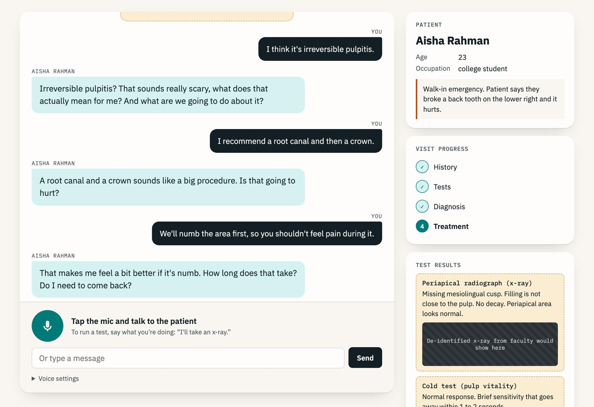

AI Virtual Patient
A voice AI patient for Dugoni School of Dentistry faculty. Dental students interview a patient with a broken tooth, order tests, and give a diagnosis.

Overview
This is the faculty project I'm helping with through my AI Research Assistant job at the University of the Pacific. Dental school faculty asked for help building a chatbot that plays a patient, so first and second year students can practice a full patient conversation before they treat real people.
They wanted it voice first. Their reasoning was that the hardest part for students is starting the conversation and working through the decision tree.
What I built
A working local prototype, built at zero cost:
- Voice in through the browser's Web Speech API
- Replies from a local LLM
- Voice out through Kokoro 82M, about 4 seconds per reply
- Students take a history, run tests like an x-ray or a pulp test, then pick a diagnosis and treatment
- A faculty view that shows what the student asked, what they missed, and whether their diagnosis matched the case
Where it's going
The faculty gave feedback after the first demo. They want a virtual avatar, something every dental student can use, and maybe Canvas integration. The cases are still being written by faculty, so everything in the demo is sample data.